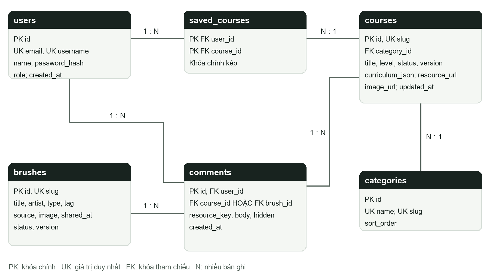

Mô hình dữ liệu giải thích cho người mới
ARTIO dùng mô hình dữ liệu quan hệ. Mỗi bảng giống một trang tính: hàng là một bản ghi, cột là thuộc tính. Các bảng nối nhau bằng mã định danh. Một số cột khóa học chứa JSON để giữ nội dung chương/bài lồng nhau; điều đó không biến toàn bộ database thành NoSQL.
1 Khóa chính khóa ngoại và quan hệ
- PK là khóa chính: ví dụ courses.id=1 nhận diện một khóa học. Tên có thể đổi nhưng id vẫn là khóa nhận diện.
- FK là khóa tham chiếu: courses.category_id=2 có nghĩa khóa học thuộc danh mục có categories.id=2.
- UNIQUE ngăn trùng email, username hoặc slug. Slug là chuỗi ngắn không dấu dùng để nhận diện bằng URL.
- 1:N là một-nhiều: một danh mục chứa nhiều khóa học. N:N là nhiều-nhiều: nhiều người lưu nhiều khóa học, nên cần saved_courses.

2 Ví dụ nối dữ liệu
Giả sử users.id=8 là Lan, courses.id=1 là khóa học mắt anime. Khi Lan bấm Lưu, hệ thống thêm một hàng (user_id=8, course_id=1) vào saved_courses. Khi mở account.php, PHP nối bảng này với courses để lấy tên/ảnh khóa học. Không cần chép cả tên/ảnh khóa học vào bảng saved_courses.
Lan bình luận về khóa học 1: comments có user_id=8, course_id=1, brush_id=NULL. Nếu bình luận về brush 3 thì course_id=NULL, brush_id=3. SQLite trigger và API ngăn trường hợp cả hai cùng có giá trị hoặc cùng trống.
3 Từ điển bảng
| Bảng | Trường đáng nhớ | Vai trò |
|---|---|---|
| users | id PK; email/username UNIQUE; name; password_hash; role | Tài khoản, phân quyền admin/student, tên người bình luận. |
| categories | id PK; name/slug UNIQUE; sort_order | Nhóm khóa học và thứ tự danh mục. |
| courses | id PK; category_id FK; slug UNIQUE; title; level; status; version | Khóa học dùng bởi thư viện, người mới, New Share, chi tiết và admin. |
| brushes | id PK; slug UNIQUE; title; artist; type; tag; source; shared_at; status; version | Brush và link nguồn; không lưu dữ liệu file brush bundle trong bảng. |
| saved_courses | user_id + course_id là PK kép và FK | Nối tài khoản với khóa học đã lưu; không lưu một khóa học hai lần cho cùng user. |
| comments | id PK; user_id FK; course_id/brush_id FK; resource_key; body; hidden | Bình luận. Phải có đúng một tài nguyên; hidden=1 là đã ẩn. |
| site_settings | name PK; value | Chữ/ảnh CMS và Facebook. content_hero_title là ví dụ tên khóa. |
| contact_messages | id PK; name; email; message; source_url; created_at | Hộp thư từ API contact; không có FK user vì API này cho khách gửi. |
| auth_attempts | bucket PK; attempts; reset_at | Giới hạn thử đăng nhập/gửi quá nhanh theo nhóm request. |
| artio_migrations | name PK | Ghi các migration dữ liệu đã chạy, tránh chạy lại phần seed đặc biệt. |
| newsletter_subscribers | id PK; email UNIQUE; created_at | Bảng tương thích phần đăng ký email cũ; không hiển thị trên landing mới. |
4 Nội dung khóa học nằm trong đâu
Các cột mô tả chính là excerpt, description, image_url, preview_url và resource_url. benefits_json, audience_json và requirements_json chứa danh sách văn bản. curriculum_json chứa chương và bài:
[
{
"title": "Nền tảng",
"lessons": [
{
"title": "Luyện nét",
"minutes": 15,
"url": "",
"content": "Bài tập thực hành...",
"free": true
}
]
}
]Editor gửi cả cấu trúc trong một lần. PHP giải mã JSON thành mảng, tính số bài và tổng minutes để hiển thị. Bản này không có bảng chapters/lessons riêng hoặc bảng tiến độ. Nếu muốn tìm từng bài hoặc đánh dấu hoàn thành, cần mở rộng mô hình.
5 Nội dung trang chủ và thứ tự tài nguyên
- site-content.php chứa giá trị mặc định. Khi admin lưu, API ghi các khóa content_* vào site_settings. Khi đọc, giá trị đã lưu thay giá trị mặc định. Xóa CSS không xóa chữ CMS.
- Khu người mới chọn tối đa 3 khóa học published có level Tân thủ/Tập sự; không dùng một bảng riêng cho thẻ người mới.
- New Share gộp khóa học published theo updated_at/created_at và brush published theo shared_at; sắp giảm dần rồi lấy 4 mục. shared_at là ngày ARTIO chia sẻ, không phải ngày phát hành brush.
- Ảnh là file trong assets hoặc uploads, hoặc URL HTTPS. Database lưu đường dẫn, không lưu pixel ảnh dưới dạng BLOB.
- Link nguồn của brush và link lấy tài nguyên của khóa học là URL; ARTIO không tự tải file từ bên ngoài vào database.
6 Quy tắc giúp dữ liệu nhất quán
- PDO SQLite bật PRAGMA foreign_keys=ON. Migration thêm foreign key, trigger và chỉ mục. Khóa học phải có danh mục tồn tại.
- API cho phép status draft/published và level theo danh sách. Khách chỉ đọc published; admin có quyền xem trước nháp.
- version là số phiên bản tài nguyên. API cập nhật khi id và version khớp; bản cũ gặp lỗi 409 để tránh ghi đè thay đổi ở tab khác.
- password_hash do password_hash() tạo; password_verify() so sánh khi login. Mật khẩu admin/admin trong file thông tin là tài khoản demo local, không phải kiểu lưu mật khẩu trong users.
- comments.hidden=1 chỉ ẩn bình luận; không xóa quan hệ. Chủ bình luận hoặc admin được ẩn.
- courses.category và comments.resource_key là cột tương thích. Có dữ liệu lặp và JSON, vì vậy chưa tuyên bố toàn bộ schema đạt 3NF hoàn toàn.
7 Xem database khi cần học
Có thể mở storage/artio.sqlite bằng công cụ xem SQLite, như DB Browser for SQLite. Khi chỉ học, nên mở bản sao. Các truy vấn dưới để đọc dữ liệu, không thay đổi database:
SELECT id, title, category_id, status FROM courses;
SELECT c.title, cat.name AS chu_de
FROM courses c JOIN categories cat ON cat.id=c.category_id;
SELECT u.name, c.title
FROM saved_courses s
JOIN users u ON u.id=s.user_id
JOIN courses c ON c.id=s.course_id;database.sql là nhánh schema MySQL tham khảo. Khi chạy bản này bằng setup-local.sh/CHAY-ARTIO.cmd, không cần import MySQL. SQLite local là hệ dữ liệu đã được kiểm tra cho gói bàn giao.